Homburg · seit 1987
Ihr Fahrzeugist in besten Händen.
Lack und Karosserie von Profis – so individuell wie Sie. Vom kleinen Kratzer bis zur kompletten Restauration.

Über uns
Seit über 38 Jahren fest etabliert – mit rund 15 Mitarbeitern und einer treuen Stammkundschaft.
Mit Flexibilität, Zuverlässigkeit und Fachkompetenz setzen wir Ihre Wünsche schnell und professionell um. Zu unseren Kunden zählen Privatleute, Autohäuser und Fahrzeughersteller.
Reparatur-Zeitraffer
Vom Schaden zum Spiegelglanz.
Ziehen Sie den Regler – echte Aufträge aus unserer Halle.

 Schaden
SchadenTiefe Delle über Tür und Seitenwand.
Leistungen
Alles für Lack und Karosserie.
 01
Unfallinstandsetzung
Nach einem Schaden bringen wir Ihr Fahrzeug fachgerecht in den Originalzustand zurück – Karosserie, Lack, Teile und Technik aus einer Hand.
01
Unfallinstandsetzung
Nach einem Schaden bringen wir Ihr Fahrzeug fachgerecht in den Originalzustand zurück – Karosserie, Lack, Teile und Technik aus einer Hand.
 02
Fahrzeugveredelung
Mehr Glanz, mehr Charakter: Wir veredeln Lack, Felgen und Details, bis Ihr Auto besser aussieht als am ersten Tag.
02
Fahrzeugveredelung
Mehr Glanz, mehr Charakter: Wir veredeln Lack, Felgen und Details, bis Ihr Auto besser aussieht als am ersten Tag.
 03
Achsvermessung
Spur, Sturz und Nachlauf werden mit moderner Messtechnik geprüft und bei Bedarf exakt auf Herstellerwerte eingestellt.
03
Achsvermessung
Spur, Sturz und Nachlauf werden mit moderner Messtechnik geprüft und bei Bedarf exakt auf Herstellerwerte eingestellt.
 04
Klimaservice
Damit es im Sommer kühl und im Winter klar bleibt: Wir prüfen, befüllen und desinfizieren Ihre Klimaanlage.
04
Klimaservice
Damit es im Sommer kühl und im Winter klar bleibt: Wir prüfen, befüllen und desinfizieren Ihre Klimaanlage.
 05
Autoglasreparatur
Steinschlag? Wir bewerten den Schaden schnell, reparieren kleine Schäden per Harz-Verfahren und tauschen große Scheiben komplett.
05
Autoglasreparatur
Steinschlag? Wir bewerten den Schaden schnell, reparieren kleine Schäden per Harz-Verfahren und tauschen große Scheiben komplett.
 06
Moderne Dellentechnik
Smart Repair ohne neuen Lack: Beulen und Hagelschäden drücken wir mit Spezialwerkzeug heraus – oft in wenigen Stunden.
06
Moderne Dellentechnik
Smart Repair ohne neuen Lack: Beulen und Hagelschäden drücken wir mit Spezialwerkzeug heraus – oft in wenigen Stunden.
 07
Scheinwerfereinstellung
Richtig sehen und gesehen werden: Wir prüfen und stellen Abblend- und Fernlicht exakt ein – auch adaptive Systeme.
07
Scheinwerfereinstellung
Richtig sehen und gesehen werden: Wir prüfen und stellen Abblend- und Fernlicht exakt ein – auch adaptive Systeme.
 08
Oldtimerrestauration
Werterhalt mit Gefühl: Wir restaurieren Klassiker originalgetreu oder mit behutsamen Upgrades – traditionelles Handwerk trifft moderne Technik.
08
Oldtimerrestauration
Werterhalt mit Gefühl: Wir restaurieren Klassiker originalgetreu oder mit behutsamen Upgrades – traditionelles Handwerk trifft moderne Technik.
Aus der Lackierkabine
Handarbeit, die man sieht.
Echte Aufnahmen aus unserer Halle – vom Airbrush bis zur kompletten Sonderlackierung.
Moderne Dellentechnik
Wir sehen jede Delle.
Mit Prüflicht machen wir selbst kleinste Beulen sichtbar – und drücken sie ohne neuen Lack wieder heraus. Fahren Sie mit der Maus oder dem Finger über das Bild.
Mehr zu Smart Repair Prüflicht bewegen
Prüflicht bewegen
Schaden-Check
Wo hat's geknallt?
Tippen Sie die betroffenen Stellen an und wählen Sie die Art des Schadens – wir schlagen die passende Leistung vor und Sie schicken uns alles direkt per WhatsApp.
Noch keine Stelle gewählt.
Projekt-Story
Ford Thunderbird.
Elf Etappen. Ein Klassiker.


Lack-Labor · 3D
Welche Farbe darf's sein?
Farbe wählen, Glanzgrad einstellen, Felgen tauschen – und das Auto mit dem Finger drehen. Farbton genau getroffen, wie bei jedem Auftrag.
FarbtonCandy-Rot
Glanzgrad
Felgen
Diese Lackierung anfragen3D-Modell „Ferrari 458 Italia“ von vicent091036, CC BY 4.0
Im Schadensfall
In vier Etappen zurück auf die Straße.

- 01
Schaden melden
Per App, WhatsApp oder Telefon – mit Fotos geht's am schnellsten.
- 02
Begutachtung
Wir sehen uns den Schaden an und sagen Ihnen ehrlich, was nötig ist.
- 03
Versicherung
Wir unterstützen Sie bei der Abwicklung mit Ihrer Versicherung.
- 04
Reparatur & Übergabe
Karosserie, Lack, Technik – und Ihr Auto steht wieder wie neu vor Ihnen.
Werkstatt-Rundflug
Kommen Sie mit auf eine Runde durch die Halle.
Ein einziger FPV-Flug vom Hof durch das Tor, vorbei an Richtbank und Lackierkabine bis zum fertigen Auto – der beste Beweis, wie es bei uns aussieht. Im Entwurf: Beispielflug von Falcon Eye (Tiefgarage). Der echte Flug durch Ihre Halle folgt.
Das sagen unsere Kunden
4,9
aus 89 Google-Bewertungen · 100 % Weiterempfehlung auf Facebook (12 Bewertungen)

Zufrieden?
Scannen und bewerten – das hilft uns sehr.
Galerie
Ein kleiner Auszug unserer Projekte.